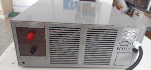

Fontes de Alimentação CC de 125V para Subestações Elétricas – Confiabilidade e Aplicações Industriais
As fontes de alimentação de corrente contínua (CC) de 125V são componentes essenciais em subestações elétricas, garantindo a operação contínua de sistemas de proteção, controle e monitoramento. Este whitepaper explora os desafios de confiabilidade em ambientes industriais, apresenta soluções técnicas avançadas e destaca os benefícios de fontes CC modernas. Com foco em eficiência, redundância e integração com baterias, demonstramos como essas fontes melhoram a estabilidade da rede elétrica, reduzindo downtime e custos operacionais.
Desafios na Alimentação Auxiliar de Subestações
Subestações enfrentam riscos como interrupções na alimentação CA, sobrecargas momentâneas e falhas em componentes críticos, como relés de proteção e disjuntores. Sem uma fonte CC confiável, esses eventos podem levar a blackouts, danos a equipamentos e perdas financeiras. Além disso, cargas contínuas crescentes de relés microprocessados aumentam a demanda por sistemas robustos, enquanto ambientes extremos (temperaturas altas, umidade) aceleram a degradação de baterias.
A Solução: Fontes CC de 125V da INERGIAE
Nossas fontes CC de 125V são projetadas para integração perfeita com bancos de baterias e carregadores, oferecendo redundância e monitoramento inteligente. Elas convertem entradas CA universais (95-264V) em saídas estáveis de 125VDC, com potências de até 1kW ou mais, dependendo do modelo. Recursos incluem proteção contra sobrecarga, sobretensão e curto-circuito, além da possibilidade de serem monitoradas através da interface analógica de corrente 4mA-20mA ou da interface serial.
Características Técnicas Principais
- Entrada e saída: entrada CA universal, saídas 110V, 125V ou 150Vcc, com correntes até 8A;
- Capacidade de fornecer corrente de pico com valor 3 vezes o valor nominal por até 10ms;
- Eficiência: Até 90% de eficiência, com ventilação forçada;
- Proteção: Isolamento de 4300VDC, conformidade com EN/IEC60950-1 e CE;
- Aplicações: Alimentação de relés, bobinas de disjuntores, sistemas de comunicação e backup durante falhas CA.
Estudo de caso: utilização na usina Belo Monte
Em 2023 a INERGIAE forneceu fontes de alimentação para a concessionária que opera a usina Belo Monte. As fontes são utilizadas para alimentação de circuitos de controle.
Conclusão
As fontes CC de 125V da INERGIAE representam uma solução estratégica para a modernização de subestações, combinando tecnologia avançada com robustez industrial. Recomendamos avaliações personalizadas para otimizar o dimensionamento e integração. Contate-nos para mais detalhes ou cotações.